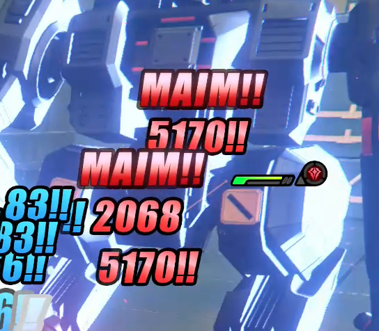
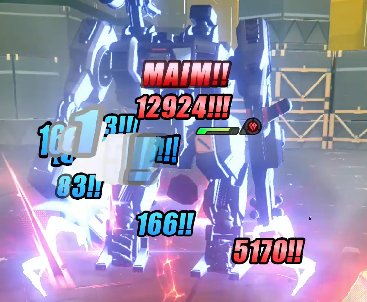

Claret Flint:
testing the Laceration multiplier
By Chickenfoot · Data collection: GoldDemon12 · ChatGPT assistance disclosed below
Three displayed damage tiers. Two recordings. A test of whether the Laceration bonus compounds.
Abstract
Origin of the research question: The discussion of competing interpretations and investment concerns comes from Chickenfoot’s original reasoning, reworded with ChatGPT assistance. The numerical analysis and qualifications were developed with that assistance; this section is not a verbatim quotation.
The tester identifies conflicting interpretations of how the displayed Laceration DMG bonus maps to damage in Zenpai’s discussion [5] and The Sacred Spear’s Claret guide [6]. At 150%, applying the bonus twice as (1 + 1.50)² gives ×6.25 total damage; a competing interpretation squares the displayed value itself, 1.50², giving ×2.25 total damage. The larger result motivated concern about diminishing percentage returns from stacking further Laceration bonuses. In the tester’s account, Zenpai presents ×2.25 as an explicitly untested, balance-based assumption, whereas The Sacred Spear favors ×6.25, with lower DEF scaling and conventional crit-bonus treatment cited as rationale. Those two video positions are summarized from the tester’s account; their exact spoken passages have not been independently verified. Separately, the displayed formula in Rivyn Elowen’s Claret guide at 2:37 [7] was reviewed: its two crit-rate-weighted factors reduce to (1 + L)² when both checks are guaranteed. Before empirical validation, these mappings are speculative hypotheses, not established descriptions of the game’s behavior. Neither balance expectations nor an analogy with ordinary crit damage can settle how Laceration is actually applied; that requires in-game testing. This note does not establish whether any creator had conducted separate tests. It evaluates the competing interpretations against the limited evidence presented here.
Two supplied training recordings contain red Maim readouts of 2,068, 5,170, and 12,924. The within-clip ratios are 2.500000 and approximately 2.499807. These observations are consistent with a 150% Laceration bonus producing a ×2.5 multiplier at each of two stages. Within this limited test, the observed tiers favor (1 + L)² over L² and additive reapplication under a common-base, unchanged-modifier assumption. They do not establish that further Laceration investment is inefficient; that requires comparing marginal gains and the alternatives available to a build.
The recorded Maim tiers are consistent with a second multiplicative Laceration bonus: approximately ×6.25 relative to the lowest tier.
This is a numerical check of a mechanic described in the kit reference, not a claim to have discovered an undocumented mechanic. Event frequencies and a complete absolute-damage calculation have not been established.The damage on screen
Damage values below are transcribed from the supplied crops and cross-checked against extracted full frames. The filenames “no crit,” “single crit,” and “double crit” describe the tester’s interpretation; the raw measurements are the displayed numbers.
{kind=link}

2,068 and 5,170. Full frame at 26.95 s.
{kind=link}
{kind=link}

5,170 and 12,924. Full frame at 19.00 s.
{kind=link}
| Record | Damage | Comparison | Interpretation under model |
|---|---|---|---|
| A · lower tier | 2,068 | Reference | No Laceration multiplier |
| A · higher tier | 5,170 | 5,170 / 2,068 = 2.5 | One application |
| B · lower tier | 5,170 | Same displayed middle tier | One application |
| B · higher tier | 12,924 | 12,924 / 5,170 ≈ 2.499807 | Two applications |
These are selected examples, not an exhaustive hit census. A number lingering across frames is one readout, not multiple independent observations.
Original recordings and playback controls
Buttons seek and pause; press Play to review. Original files are retained without re-encoding. Figure times refer to sampled frames, not exact hit-onset times. The article transcribes the relevant visual evidence; no audio transcript is included.
A bonus applied twice
The linked kit describes Sharp DMG as DEF-scaling damage that uses Laceration DMG in place of ordinary CRIT DMG. Above 100% CRIT Rate, a critical hit receives a further Laceration check using excess CRIT Rate. [1]
Let B be the unrounded damage of an otherwise identical Maim before either Laceration multiplier, L the Laceration bonus as a decimal, and k the number of bonus applications. The candidate model is:
At the displayed L = 1.50, the three factors are 1, 2.5, and 6.25. The reported competing interpretation treats 1.50 itself as the full factor and squares it, giving L² = 2.25. Adding the bonus twice instead gives 1 + 2L = 4. Both alternatives predict a lower upper tier than observed under the same-base assumption. Clip B’s upper-to-middle ratio of approximately 2.5 supports another ×2.5 application.
| Model tier | Calculation | Observed | Observed − calculated |
|---|---|---|---|
| One application | 2,068 × 2.5 = 5,170 | 5,170 | 0 |
| Two applications | 2,068 × 6.25 = 12,925 | 12,924 | −1 |
| Square the displayed value | 2,068 × 1.50² = 4,653 | 12,924 | +8,271 |
| Additive alternative | 2,068 × 4 = 8,272 | 12,924 | +4,652 |
Here ×2.25 means 225% of the base damage, or +125% above it. A claim of “+225% bonus damage” would instead mean ×3.25 total damage. Likewise, ×6.25 means 625% of base, or +525%. Defining total factors separately from bonuses avoids conflating different hypotheses.
The one-point difference
Using an already displayed integer as the unrounded base introduces an assumption. If the engine rounds only the final result to the nearest integer, any common base in [2,067.80, 2,067.92) reproduces all three numbers. For example, 2,067.9 produces 2,068, 5,170, and 12,924 after rounding.
This shows compatibility with one rounding model; it does not establish the engine’s rounding rule. Simple final truncation with an identical base cannot reproduce all three values. Internal precision, intermediate rounding, or differences between setups still need checking.
Reproduce the displayed tiers
Illustrative arithmetic fitted to the observations. This is not an independent prediction from the full damage formula.
Damage tiers do not measure proc rates
At 119% effective CRIT Rate, the referenced rule predicts a guaranteed first crit and a 19% second-check chance, assuming that rate applies at the event and no additional mechanics intervene. This is a kit-based prediction, not a frequency measured from the supplied clips. The tester confirmed A used no discs or W-Engine, while B used discs only to reach 119% combat CRIT Rate. The exact combat CRIT Rate in A was not captured in the reviewed evidence.
The community formula document gives the ordinary crit factor as 1 + CRIT DMG, and distinguishes initial from combat stats. Its reviewed contents do not include a Sharp DMG/Laceration section, so it supplies general context rather than a complete Claret formula. [2]
What was actually tested
| Condition | Recorded value | Evidence |
|---|---|---|
| Agent / level | Claret Flint / 60 | Character screenshot; tester statement |
| Investment | M0; no W-Engine in either clip | Tester confirmed |
| Target | Guardian MK II | A at 00:04 |
| Target level | A: 70; B: unverified | Menu; differs from initial note of 60 |
| Moving enemies / stunnable enemies | Disabled / disabled | A at 00:04 |
| Enemy invulnerable | Enabled | A at 00:04 |
| Unlimited energy / adrenaline / sharpness | Enabled | A at 00:04 |
| Unlimited assist points / decibels | Disabled / disabled | A at 00:04 |
| Perfect Dodge | None, according to tester | Stationary target setting corroborates the stated control |
| Maximum HP | A: 5,651; B: 9,262 | Full evidence frames |
| Combat stats in B | DEF 441; ATK 1,468; CRIT Rate 89% +30%; CRIT DMG 102.8%; Laceration DMG 150% | B at 00:04 |
| Other displayed stats | Impact 93; AM 80; AP 133; PEN Ratio 0%; automatic Sharpness accumulation 1.5 | Character screenshot / B stats menu |
| Skills | Five skill categories show 01/12; core nodes A–F appear unlocked | Supplied skill screenshot |
| Game version / server | Not yet recorded | Reference website version is not proof of recording version |
The target reference lists DEF 857 at both selected levels 60 and 70, Electric resistance −20%, and a 150% stunned damage multiplier. The latter must not be applied merely because it appears in the database: recording A disables stuns. These are database values, not independently measured enemy stats. [3]
Build screenshots and transcribed Drive Disc stats
The supplied disc layout shows five equipped discs; slot 3 appears empty. The tester confirmed the discs were used for clip B, which displays 9,262 HP. Clip A used no discs or W-Engine.
| Slot / set | Main stat | Substats |
|---|---|---|
| 1 · Polar Metal | HP 2,200 | CR 4.8%; ATK 3%; CD 9.6%; ATK 57 |
| 2 · Swing Jazz | ATK 316 | ATK 3%; HP 224; CD 19.2%; AP 18 |
| 3 | Appears empty | — |
| 4 · Woodpecker Electro | ATK 30% | CD 14.4%; CR 2.4%; ATK 19; HP 9% |
| 5 · Polar Metal | Ice DMG Bonus 30% | CR 4.8%; ATK 6%; AP 27; HP 6% |
| 6 · Freedom Blues | ATK 30% | CR 7.2%; HP 6%; CD 9.6%; AP 9 |
All five supplied discs show S rank and level 15/15. CR = CRIT Rate; CD = CRIT DMG; AP = Anomaly Proficiency. Set descriptions visible on an individual disc do not prove that its set bonus is active.
{kind=link}
{kind=link}
{kind=link}
{kind=link}
{kind=link}
{kind=link}
{kind=link}
{kind=link}
{kind=link}
What remains to be established
The middle tier is shared across clips, but this does not by itself establish identical unrounded base damage or all damage modifiers. Multiple Maim labels overlap during the sequences. The evidence review sampled both clips at two-second intervals and the highlighted damage windows at six frames per second; it did not classify every hit or audit audio.
- Reconcile the setups. Confirm enemy level in B, capture the exact combat CRIT Rate in the unequipped A setup, and record the game version. Record the in-game core text alongside each setup.
- Make an absolute prediction. Verify the level-1 Maim multiplier, target defense treatment, applicable resistance, and every active bonus. Predict base damage from these inputs without using 2,068 to fit it.
- Test the threshold. Repeat the same Maim sequence below, at, and above 100% effective CRIT Rate while keeping DEF, skill level, Laceration DMG, and target settings fixed. Record stats in the relevant combat state.
- Measure frequencies. Predefine a sample size and counting rule, log each eligible Maim once, retain ambiguous events as exclusions, and compare the upper-tier frequency with excess CRIT Rate using an appropriate binomial interval.
- Change the multiplier. If feasible, change only Laceration DMG and test whether the second tier follows (1 + L)² across another value. This distinguishes the general rule from a match at one build.
No claim about optimal builds, total DPS gain, statistical significance, or behavior beyond two multiplier applications is made by this note.
Why this matters for investment
Original reasoning by Chickenfoot, reworded with ChatGPT: The concern about diminishing value from further Laceration bonuses motivated this section. The conditional formula, worked examples, and limits on investment conclusions were added with ChatGPT assistance.
Clarifying this mapping matters when comparing agents, W-Engines, and Drive Disc effects that increase Laceration DMG. The concern motivating this research is that an already large bonus may make further additions less valuable relative to other available upgrades. Whether those sources are worth investing in depends on their incremental damage gain and opportunity cost, not the size of the ×6.25 factor alone.
Under the candidate model, if a buff adds ΔL to the same Laceration bonus and both applications use the increased value, the relative gain on a twice-multiplied hit is:
For an illustrative +25 percentage points, raising L from 150% to 175% changes the twice-applied factor from 6.25 to 7.5625: a 21% relative increase. The same addition from 300% to 325% gives about 12.89%. These are hypothetical calculations, not measurements of a particular agent, W-Engine, or disc effect.
This is diminishing percentage return for a fixed additive increase as the existing bonus grows. It is not a hard cap: absolute twice-multiplied damage remains quadratic in L. A large starting multiplier therefore does not, by itself, demonstrate “oversaturation” or make further investment poor value.
Additional Laceration bonuses may be less worthwhile than competing upgrades in a given build, but the supplied tests do not rank those choices. An investment comparison must also account for first- and second-crit probabilities, buff uptime, which damage instances benefit, stacking rules, other stats and effects supplied by the option, and what is given up to obtain it. The 21% example applies only to a twice-multiplied hit; it is not a 21% total-DPS prediction. Controlled buff tests and rotation-level comparisons are needed before recommending for or against specific investments.
References & reproducibility
- nanoka.cc — Claret. Core Passive: Banquet of Pale Blood and related skill descriptions. Website selection: 3.2. Accessed 9 September 2026. Community database; verify against in-game text for the recorded version.
- ZZZ Stats and Damage Calculation. Published community reference; footer says last updated 02/08/2026 (DD/MM/YYYY). Accessed 9 September 2026. General crit and stat context.
- nanoka.cc — Guardian MK II, ID 300021. Website selection: 3.2. Levels 60 and 70 inspected on 9 September 2026.
- Tester-supplied recordings and nine screenshots. Original recordings are embedded above. Observation data · File sizes and SHA-256 checksums · Reproducible arithmetic.
- Zenpai — 100% Crit Rate Isn’t Enough Anymore. Community interpretation supplied by the tester: ×2.25 proposed as an assumption based on balance. Title and channel checked on 9 September 2026; no transcript was available through the review tool. No direct quotation or claim of measured validation is attributed to the creator.
- The Sacred Spear — How to Play Claret (Main Mechanics, Builds, & Teams Full Guide) | ZZZ Made EZ. Community interpretation supplied by the tester: ×6.25. Title and channel checked on 9 September 2026; no transcript was available through the review tool. The video description identifies Creator Beta Server footage, which may differ from the recorded test version.
- Rivyn Elowen — Claret IS Insane, BUT..! COMPLETE In-Depth Claret Guide | Best Weapons, Teams & Builds | ZZZ 3.2. Relevant explanation: 2:31–2:40; linked at the tester’s 2:37 timestamp. Transcript and on-screen formula reviewed on 9 September 2026. The displayed expression combines two crit-rate-weighted factors. With both checks guaranteed and L = 1.50, those factors give 2.5 × 2.5 = 6.25. This is an inference from the displayed formula, not a claim that the guide experimentally measured that ratio.
Revision 0.3: added authorship, data-collection credit, ChatGPT disclosure, section-level origin notes, and clarification that the competing mappings require empirical validation. Revision 0.2: added linked, tester-reported competing interpretations, explicit total-versus-bonus definitions, and conditional investment implications with reproducible marginal-gain examples. Revision 0.1 established the initial evidence transcription and ratio analysis. Draft pending tester review and methods reconciliation. Article by Chickenfoot; data collected by GoldDemon12 and supplied for this article through Chickenfoot. Game assets belong to their respective rights holders. This page does not imply publisher endorsement or formal peer review.
Contributors
Chickenfoot · Author
Originated the research question, supplied the research materials and setup clarifications, and contributed the interpretation and investment concerns discussed in this note.
GoldDemon12 · Data collection
Collected the experimental data used in this article for Chickenfoot. Find GoldDemon12 on Twitch and YouTube.
ChatGPT assistance & origin of ideas
ChatGPT, through Codex, was used to generate this webpage and its code, organize the supplied evidence, assist with source review and calculations, and draft and reword the article text. The gameplay recordings and screenshots are supplied experimental evidence, not AI-generated observations.
Notes in the Abstract and Investment implications identify Chickenfoot’s original thoughts that were reworded with ChatGPT. The core hypothesis that Laceration can crit twice also came from Chickenfoot. The evidence transcription, mathematical comparisons, rounding discussion, methodological limitations, and proposed follow-up tests were developed with ChatGPT assistance from the supplied material; they should not be read as verbatim statements by Chickenfoot or GoldDemon12.
AI assistance is a disclosure of how the page was produced, not independent verification or peer review. The article remains a working draft with the limitations stated above.